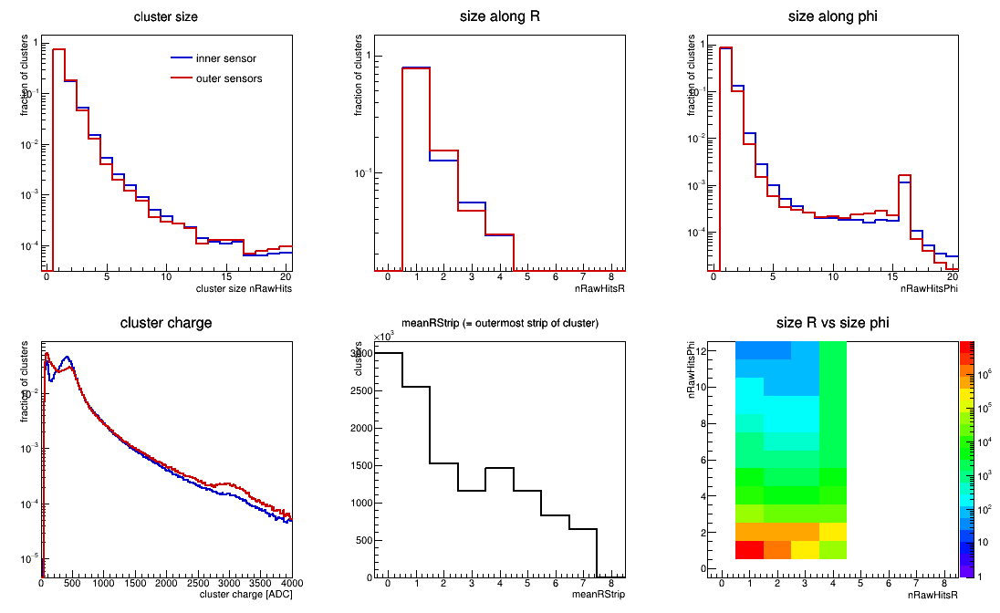
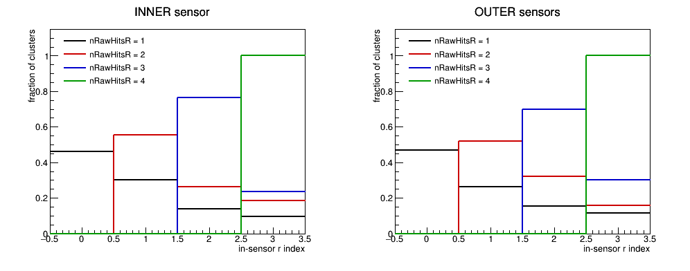
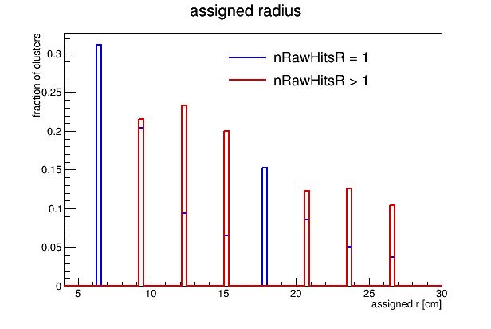
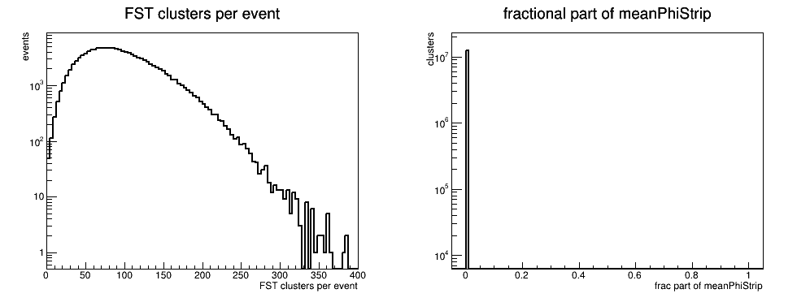
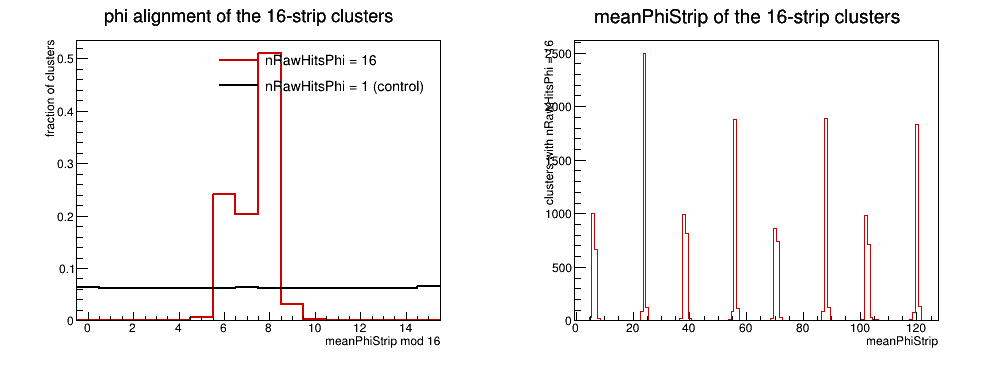

FST cluster properties in real data
← StFstSlowSimMaker ·
the FTT counterpart of this study ·
FST outer-sensor gap fix
Goal
- Measure what an FST simulation has to reproduce at raw-hit level, the way
ftt_sim_hit_maker/charge_sharing.html
did for the FTT.
- Source: production p+p 500 GeV MuDst, run 23081008, 13 files,
128,749 events, 12,302,393 clusters.
Method, and one hard limit
- The FstRawHit branch is empty in this production — 0 raw hits in
9,210 events. So the per-strip ADC profile that the FTT study measured
cannot be measured here. Recovering it needs a production with
fstEvtRawHit+fstMuRawHit enabled (BigFullChain.h:1566-1567).
- What does survive is the cluster summary on StMuFstHit:
nRawHits, nRawHitsR, nRawHitsPhi, charge,
meanRStrip, meanPhiStrip, maxTimeBin, disk/wedge/sensor.
That is enough for cluster size and charge, and enough to test what the
reconstruction does with them.
- No cuts of any kind — every cluster in the branch is counted.
Key numbers
Cluster size. Three quarters of FST clusters are a single strip.
| nRawHits | inner | outer | all |
|---|
| 1 | 74.58% | 74.54% | 74.56% |
| 2 | 17.11% | 18.13% | 17.45% |
| 3 | 5.27% | 4.68% | 5.07% |
| 4 | 1.49% | 1.26% | 1.41% |
| 5 | 0.53% | 0.40% | 0.49% |
| ≥6 | 0.99% | 0.99% | 0.99% |
| mean | 1.395 | 1.375 | |
Split by direction (fraction of all clusters in that region):
| n | nRawHitsR inner | nRawHitsR outer | nRawHitsPhi inner | nRawHitsPhi outer |
|---|
| 1 | 79.06% | 76.97% | 84.91% | 88.54% |
| 2 | 12.55% | 15.43% | 13.06% | 10.07% |
| 3 | 5.53% | 4.67% | 1.25% | 0.76% |
| 4 | 2.86% | 2.92% | 0.28% | 0.15% |
Charge. inner mean 480.0 (RMS 415.3), outer mean 462.4 (RMS 465.0).
Total charge grows with size rather than staying constant, i.e. bigger clusters
are bigger deposits, not one deposit spread thinner:
nRawHits 1 2 3 4 5 6 7 8
<charge> 396 554 912 1536 2326 2925 3512 3692
Uniformity. Mean cluster size by disk: 1.375 / 1.392 / 1.399 — flat.
Inner and outer agree to 1.5%. 95.5 clusters/event (RMS 46.5).
What the reconstruction does with these clusters
Three things worth flagging. Items 1 and 2 are code: the field does not do what its
name says, and both are original code (958cd67ee7, Jan 2022), not later
regressions. Item 3 is not code — it is a pattern in the data that looks like readout
hardware, recorded here for the people who would know.
1. meanRStrip is not a mean — it is the outermost strip
StFstScanRadiusClusterAlgo.cxx:129-136
meanRStrip = 0; maxRStrip = 0;
for (int iRawHit = 0; iRawHit < nToMerge; iRawHit++) {
if(tempRStrip[iRawHit]>maxRStrip) maxRStrip = tempRStrip[iRawHit];
meanRStrip = maxRStrip; // <-- max, not centroid
...
}
A cluster spanning several r strips is assigned the largest r-strip index
it contains. The data show this directly — multi-strip clusters are
structurally forbidden from the inner indices, and a 4-strip cluster is pinned
to index 3 by construction:
| nRawHitsR | idx0 | idx1 | idx2 | idx3 | <idx> | clusters |
|---|
| inner sensor |
| 1 | 46.17% | 30.30% | 13.93% | 9.61% | 0.870 | 6,504,433 |
| 2 | 0.00% | 55.40% | 26.24% | 18.36% | 1.630 | 1,032,347 |
| 3 | 0.00% | 0.00% | 76.45% | 23.55% | 2.236 | 454,985 |
| 4 | 0.00% | 0.00% | 0.00% | 100.00% | 3.000 | 235,667 |
| outer sensors |
| 1 | 46.75% | 26.27% | 15.51% | 11.47% | 0.917 | 3,136,636 |
| 2 | 0.00% | 52.09% | 31.95% | 15.96% | 1.639 | 628,924 |
| 3 | 0.00% | 0.00% | 69.81% | 30.19% | 2.302 | 190,278 |
| 4 | 0.00% | 0.00% | 0.00% | 100.00% | 3.000 | 119,123 |
Size of the effect. For a contiguous m-strip cluster the centroid is
(m−1)/2 strips below the outermost one, and the r pitch is 2.875 cm:
- m=2 → +1.44 cm, m=3 → +2.88 cm, m=4 → +4.31 cm, always outward.
- 21.63% of all clusters have nRawHitsR > 1; mean outward shift over those
2.17 cm, over all clusters 0.469 cm.
- For scale, the intrinsic r resolution is pitch/√12 = 0.830 cm. So this is
a one-sided systematic of roughly half the resolution, on every FST hit.
- Whether the outermost strip is the right choice depends on where the real hit sits
within a multi-strip family — see Multi-strip clusters along r.
The maker already identifies the largest-ADC raw hit of a cluster
(rawHitMaxAdcTemp) and uses it for meanPhiStrip, maxTimeBin and
apv, but not for r.
2. The phi charge centroid is computed, then truncated to an integer
The phi-merge step is the only place FST reconstruction does any charge
interpolation, and it is discarded one maker later by an int declaration:
StFstScanRadiusClusterAlgo.cxx:192 // charge-weighted, fractional
meanPhiStrip = c1->getMeanPhiStrip()*c1->getTotCharge()/totCharge
+ c2->getMeanPhiStrip()*c2->getTotCharge()/totCharge;
StFstHitMaker.cxx:104
int meanRStrip = -1, meanPhiStrip = -1; // <-- getMeanPhiStrip() returns float
StFstHitMaker.cxx:118
meanPhiStrip = (*clusterIter)->getMeanPhiStrip(); // silently truncated
Confirmed in the data: 0 of 12,302,393 clusters carry a fractional
meanPhiStrip, although 13.89% went through the merge that produces one.
- Truncation is toward zero, so an affected hit always moves to the lower phi strip
index, by <f> ≈ 0.5 strip. At a 4.09 mrad pitch that is 0.041 cm at
r=20 cm, ~0.006 cm averaged over all clusters — small, and far too small
to be the 12-fold wedge steps.
- The sign alternates per wedge, since local[1] carries
kFstzFilp[disk-1]*kFstzDirct[moduleIdx-1], with opposite sign for inner vs
outer sensors.
- Fix: declare both as float on line 104. meanRStrip is
integer-valued today so it is unaffected, but it must change with it or item 1 cannot
ever be given a fractional value.
3. A 16-phi-strip readout pattern — for FST hardware experts
The phi-size distribution has a sharp, isolated spike at nRawHitsPhi = 16.
nRawHitsPhi is the length of a contiguous run of occupied phi strips, so runs of
exactly 16 occur ~7× more often than runs of 15 or 17:
nRawHitsPhi 9 10 11 12 13 14 15 16 17
inner 0.020% 0.020% 0.017% 0.018% 0.015% 0.018% 0.017% 0.115% 0.010%
outer 0.021% 0.021% 0.020% 0.024% 0.024% 0.028% 0.022% 0.164% 0.007%
They are aligned to fixed 16-strip boundaries: 95.5% land at
meanPhiStrip mod 16 of 6, 7 or 8 — where a run spanning [16k, 16k+15] puts
its centroid — against a flat 6.25% for the single-strip control.
meanPhiStrip mod 16 | nPhi=16 nPhi=1 (control)
6 | 24.069% 6.217%
7 | 20.384% 6.296%
8 | 51.016% 6.124%
all others | <0.7% each ~6.2% each
- Spread evenly over all 8 APVs of a wedge (17.8% down to 9.9%) — not one bad chip.
- From Calibrations/fst/fstMapping, one APV covers 32 phi strips ×
4 r strips = 128 channels, uniformly on all 8 chips. So 16 phi strips is half a
chip in phi.
- Not measured: whether these clusters also span all 4 r strips. If they do the
block is 64 channels (half an APV); if not it is fewer. This distinction has not
been checked.
- 16,091 clusters, 0.13% of the sample. Each one is a 16-strip-wide hit handed to
tracking rather than rejected.
Question for FST experts: is there a readout grouping of 16 phi strips (a
connector, pitch adapter, or APV half) that could fire together on every chip?
Multi-strip clusters along r
21.6% of clusters span more than one r strip. Facts:
- The r pitch is 2.875 cm. Charge diffusion cannot cross it: a track from the
origin at r=20, z=165 moves ~36 μm in r while crossing 300 μm of sensor.
- Accidental overlap does not account for it: ~133 raw hits/event over 9,216
(sensor, phiStrip) cells is ~1.4% occupancy, so random double occupancy is
<<1%, not 21%.
- FST readout traces run radially outward at fixed phi to a board at the outer
edge, so signal on an inner strip can couple electrically into outer strips at the
same phi, including non-adjacent ones (R1→R3 skipping R2). Reported by FST
hardware; this is coupling along exactly the (sensor, phiStrip) cell that the
clustering groups.
- Cluster charge grows with size (<charge> = 396 / 554 / 912 / 1536 for n = 1–4).
This is consistent both with one source plus threshold-selected shadows and with
several particles; it does not discriminate between them.
- Cannot be settled from this MuDst — FstRawHit is empty, so there is no
per-strip ADC. A production with fstEvtRawHit+fstMuRawHit on would
show directly whether ADC falls monotonically outward from a source within a
family, whether the shadow/source ratio is small and constant, and whether gaps
occur.
The clustering groups these r-wide rather than r-adjacent:
StFstScanRadiusClusterAlgo.cxx:78-90 // comment says "find all raw hits that are neighboring"
while (rawHitsToMergePtr != rawHitsToMerge.end() && !rawHitsVec[sensorIdx][phiIdx].empty()) {
... pop one from rawHitsVec, push_back to rawHitsToMerge, ++rawHitsToMergePtr;
}
- Each iteration pushes one element and advances the iterator by one, so
rawHitsToMergePtr != end() can never become false. The loop ends only when
the (sensor, phiStrip) cell is empty, and nothing tests r adjacency — every
raw hit in the cell becomes one cluster. The code comment says otherwise.
- Given the coupling above, grouping the whole cell is the behaviour that keeps a
skipping family (R1, R3) as one hit; an r-adjacency requirement would split it in two.
- Step 2 merges phi-adjacent clusters if |ΔmeanRStrip| < 3.5. A sensor has only
4 r strips, so |Δ| ≤ 3 always and the condition is unconditionally true; a run
of occupied adjacent phi strips chains into one cluster. 0.55% of clusters exceed
8 raw hits this way.
- Separately, lines 65-70 delete the raw hit and then store and dereference the
same pointer. It is a use-after-free; the freed memory is in practice still intact,
which is why it has not surfaced as a crash.
Which r strip such a cluster should be reported at depends on where the source sits
in the family, which is what item 1 above assigns and what the raw ADCs would settle.
Consequences for a slow simulation
- A minimal one-strip-per-hit sim gives nRawHits ≡ 1. Real data is 74.6% at 1
with mean 1.39, so cluster-size distributions will not match until a
crosstalk/noise model exists. Fine for geometry closure, not for efficiency
or resolution studies.
- Any sim built on kFstrStart/kFstrStop should note that
StFstConsts.h:52 has kFstrStop[2] = 136.25, a typo for 13.625.
It is currently unused anywhere outside StFstConsts.h, so it is harmless
today and a trap tomorrow.
- Items 1 and 2 above are reconstruction bugs, not sim issues — but a sim that
runs through the same StFstClusterMaker/StFstHitMaker inherits both,
which is the point: MC and data would at least be wrong identically, and the
fix would be testable in one place.
Plots

cluster size (total, R, phi), charge, meanRStrip, R vs phi size |

in-sensor r index by nRawHitsR — multi-strip clusters
cannot reach the inner indices |

assigned radius, single vs multi strip |

clusters/event, and the (identically zero) fractional part of meanPhiStrip |

the 16-strip clusters are aligned to fixed 16-strip boundaries —
a 64-channel readout block |
|
Code
Run as:
root4star -b -q 'script/checkFstClusters.C("<MuDst glob>", 0, "FstSlowSim/fstclus")'
root4star -b -q 'script/checkFstRStripBias.C("<MuDst glob>", 0, "FstSlowSim/fstclus")'
{kind=link}
{kind=link}
{kind=link}
{kind=link}
{kind=link}